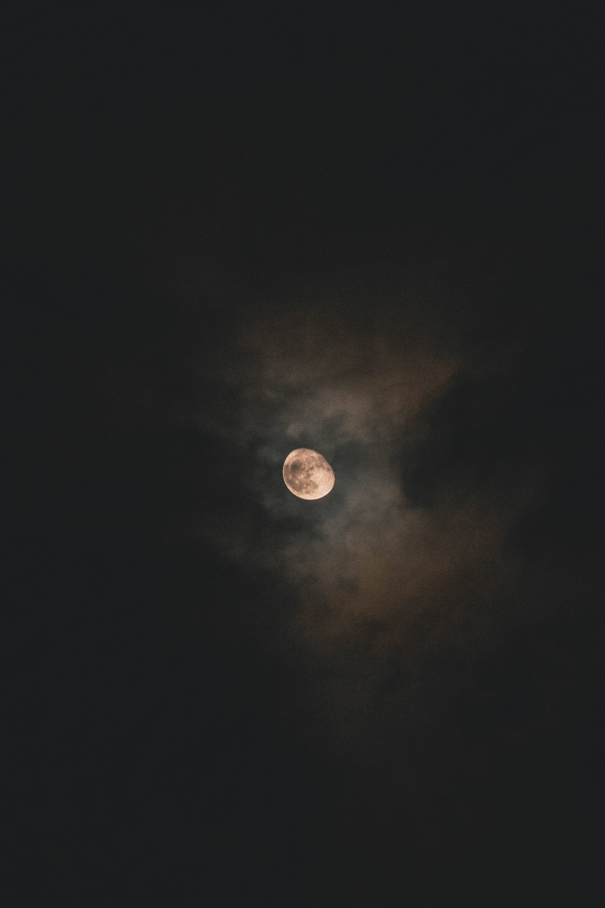

A Boston Lullaby

By James Jeffrey Roche
BABY’S brain is tired of thinking
On the Wherefore and the Whence;
Baby’s precious eyes are blinking
With incipient somnolence.
Little hands are weary turning 5
Heavy leaves of lexicon;
Little nose is fretted learning
How to keep its glasses on.
Baby knows the laws of nature
Are beneficent and wise; 10
His medulla oblongata
Bids my darling close his eyes,
And his pneumogastrics tell him
Quietude is always best
When his little cerebellum 15
Needs recuperative rest.
Baby must have relaxation,
Let the world go wrong or right.
Sleep, my darling, leave Creation
To its chances for the night.